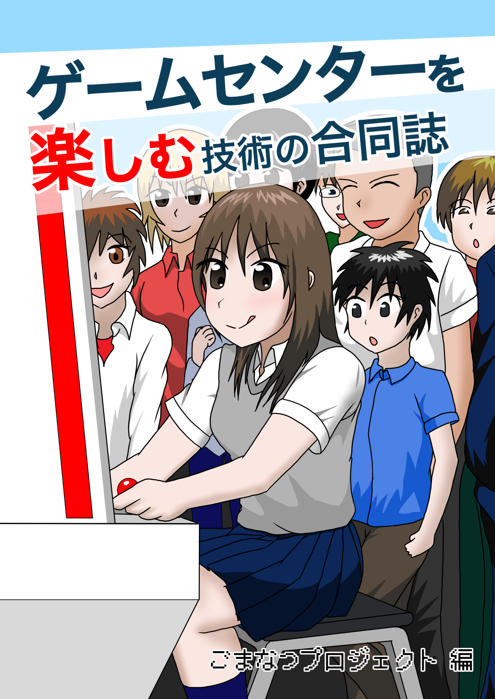
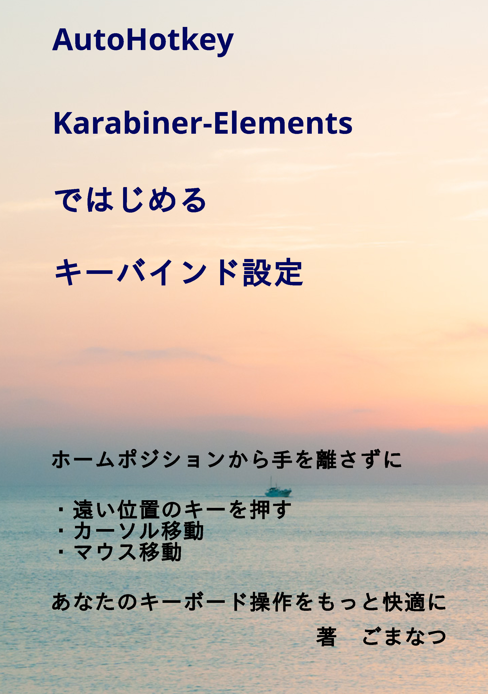

Introduction
ごまなつと申します。大学では組込みシステムにおける応答時間の遅延を一定以内に抑える研究を行い、大学院でも継続しました。また、県警から委託されたサイバー防犯ボランティアで講演活動を行っていました。現職では、C#と.NETでのWindowsアプリケーション開発と自社製品の検証を行っています。開発では分からないコードは実際に処理を追って理解し、書くコードは分かりやすくなるように心がけています。検証では、実施事項が理解できる簡潔な書類作成を心がけています。
勉強会に参加し、情報収集をしています。技術的事柄ではないですが、登壇経験があります。最近では、アウトプットとしてキー入力カスタマイズの技術同人誌を書きました。
略歴
現職, 2018-
情報通信機器メーカにて、C#と.NETでのWindowsアプリケーション開発と自社製品の検証を行う大学院, 2016-2018
広島市立大学大学院 情報科学研究科にて、組込みシステムにおける応答時間の遅延を一定以内に抑える研究を行うESSロボットチャレンジに参加
サイバー防犯ボランティアで講演活動を行う
高等学校にて、非常勤講師（情報科）として勤務
大学, 2012-2016
広島市立大学 情報科学科にて、新規研究として組込みシステムにおける応答時間の遅延を一定以内に抑える研究を行う制作物
技術同人誌
2冊頒布しております。

ゲームセンターを楽しむ技術
ゲームセンターに初めて行く人のための解説や、ゲームセンターに普段から行っている人がよりゲームセンターを楽しむ方法を書いた本。複数の著者が、自分がよくプレーするゲームの紹介と楽しみ方を解説。基盤集めだってゲーセンに入るよね？お勧めのゲームセンターや、初めての人におすすめのゲームも載ってます。

小指を伸ばさないと押せない：Escキー、Enterキー、BackSpaceキー、IMEキー
ホームポジションから手が離れる：Deleteキー、PageUpキー、PageDownキー、カーソルキー
これに不満を感じた筆者がキーバインド設定でカーソルキーやマウス操作、遠いキーをホームポジションから手を離さずに入力できるようにした本。Windows・Mac両対応（Windows：AutoHotKey、Mac：Karabiner-Elements）。
「、」2連打で「。」を入力したり、キー操作でアプリ起動も可能です。
AutoHotKey・Karabiner-Elementsではじめるキーバインド設定
記事執筆
さくらのナレッジ様にて、記事を執筆させていただきました。タイピングゲーム
QWERTY配列以外の配列に挑戦するときに設定を変更するのが面倒だと思われるため、Webサイト上でQWERTY配列のまま入力すると他の配列で入力されるタイピングゲームを作りました。かな入力に興味を持ち、その中でも薙刀式を今は練習中です。趣味
ボードゲーム、カードゲーム、自作キーボード、キーバインド設定、PCゲーム、e-sports観戦、音楽ゲーム（DDR）趣味の共通点を考えると、今持っている手札で戦略を立てるゲームが好きなようです。自分が立てた目標に向かって何をすべきか考えて、それを実行した結果が分かって行動を変更するということもあるようです。最適化やオリジナリティを求める傾向もありそうです。